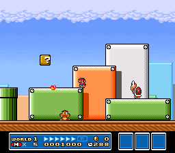
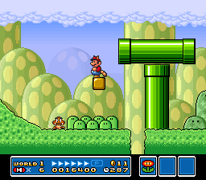
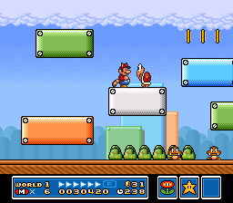
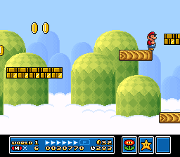
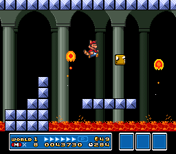
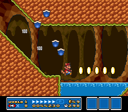
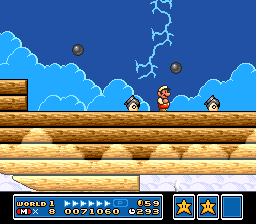
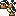
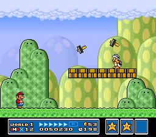

SUPER MARIO BROS. 3
Wiki
Levels
World 1
| World | Image | Overview |
|---|---|---|
| World 1-1 |
 | The first level of the game. This level introduces the Super Leaf power-up, along with various enemies. |
| World 1-2 |
 | A grassy level featuring pipes and sloped terrain. This level introduces the Starman power-up. |
| World 1-3 |
 | A plain-based level that resembles World 1-1. This level introduces Coin Heaven. |
| World 1-4 |
 | An autoscrolling athletic level featuring multiple moving platforms. |
| World 1-  |
 | The first fortress level of the game. This level introduces the boss Boom Boom, along with various castle aesthetics and enemies. |
| World 1-5 |
 | An underground level, featuring pools of water and a Coin Heaven. |
| World 1-6 |
 |
An athletic level, featuring moving platforms on tracks. |
| World 1-  |
 | The first airship level of the game. This level introduces cannons and Bullet Bills, and its boss is Larry Koopa. |
| World 1- |
 | The Hammer Brother will be on a green plain with a row of seven breakable blocks. There is a small chance that the far right brick will contain a Fire Flower. Defeating the Hammer Brother will reward the player with a Starman. |